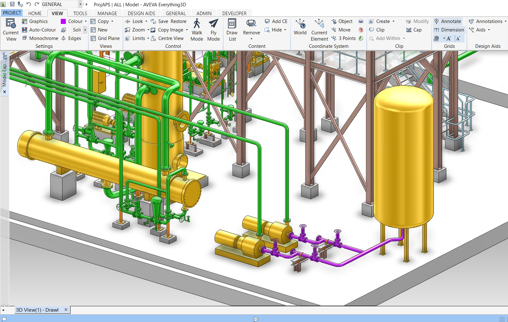
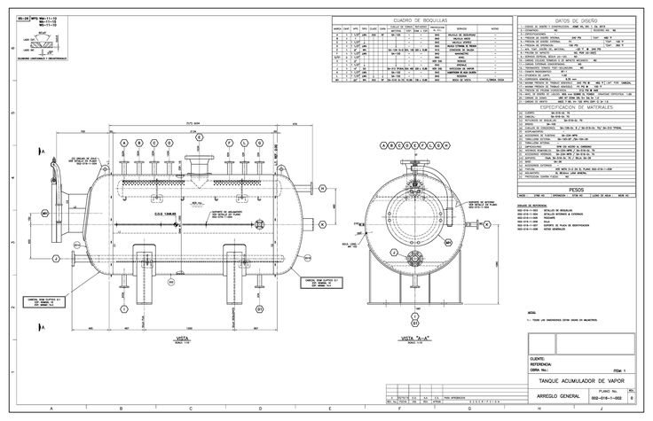
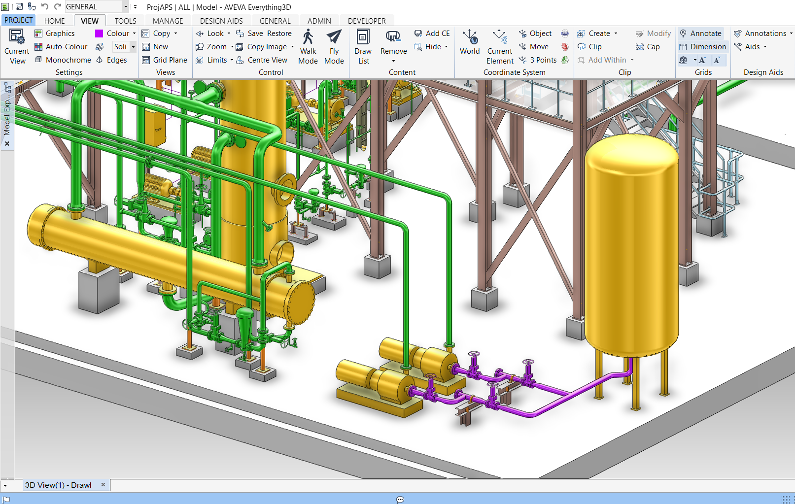

Mühendislik Hizmetleri
Boru güzergâhı, boru stres analizi, ısıl & mukavemet hesaplamaları, ekipman tasarımı ve uçtan uca mühendislik danışmanlığı.

Borulama & Boru Stres Analizi
Bir tesisin proses ve yardımcı sistemlerinde kullanılan boru hatlarının güvenli, ekonomik ve en verimli güzergâhlarının belirlenmesi, 3D ortamda modellenmesi ve boru hatlarında oluşabilecek gerilmelerin mühendislik hesapları ile incelenmesidir.
Hizmet İçeriği- 3D boru güzergâhı dizayn ve modellemesi (CAD/CAE yazılımları ile)
- Ekipman yerleşimleri ile koordineli hat planlaması
- ASME, EN, ANSI, API standartlarına uygun stres hesaplamaları
- Termal, statik ve dinamik yüklerin analizi
- ROHR2 ve benzeri yazılımlarla bilgisayar destekli modelleme
- Kritik noktalar için destek tasarımı ve optimizasyonu
- Sonuç raporlarının hazırlanması ve proje dokümantasyonu

Isıl & Mukavemet Hesaplamaları
Endüstriyel ekipmanların termal performanslarının ve mekanik dayanımlarının uluslararası standartlara uygun olarak hesaplanması ve doğrulanmasıdır.
Hizmet İçeriği- Kazan, eşanjör ve basınçlı kaplar için ısıl hesaplamalar
- ASME, EN, AD 2000 standartlarına uygun mukavemet hesapları
- Sonlu elemanlar analizi (FEA) ile gerilme ve deformasyon simülasyonları
- Termal genleşme ve yorulma analizleri
- Malzeme seçimi ve kalınlık optimizasyonu
- Hesap raporlarının hazırlanması ve onay süreçleri

Proses Ekipman Tasarımı & Danışmanlık
Endüstriyel tesislerde kullanılan basınçlı kaplar, tanklar, eşanjörler, degazörler, filtreler ve yardımcı ekipmanların uluslararası standartlara uygun olarak projelendirilmesi ve uçtan uca mühendislik danışmanlığı.
Hizmet İçeriği- Proses ihtiyaçlarına uygun teknik hesaplamalar (basınç, sıcaklık, debi)
- ASME, EN, PED, AD 2000 standartlarına uygunluk
- 3D modelleme ve detay imalat resimleri
- Kazan seçimi, kapasite belirleme ve yakıt analizi danışmanlığı
- Emisyon kontrol ve verim optimizasyonu danışmanlığı
- Proje yönetimi, montaj ve devreye alma sürecinde teknik destek

Satış Sonrası Hizmetler & Yedek Parça
Teslim edilen tüm sistemler için kapsamlı satış sonrası destek, bakım hizmetleri ve orijinal yedek parça temini sağlıyoruz.
Hizmet İçeriği- Periyodik bakım ve kontrol hizmetleri
- Arıza tespit, onarım ve revizyon çalışmaları
- Orijinal yedek parça temini ve lojistik destek
- Uzaktan izleme ve teknik destek hattı
- Kapasite artırımı ve modernizasyon projeleri
- İşletme personeline eğitim ve sertifikasyon programları
Mühendislik Danışmanlığı Alın
Deneyimli mühendislik ekibimizle projenizin her aşamasında yanınızdayız.
İletişime Geçin